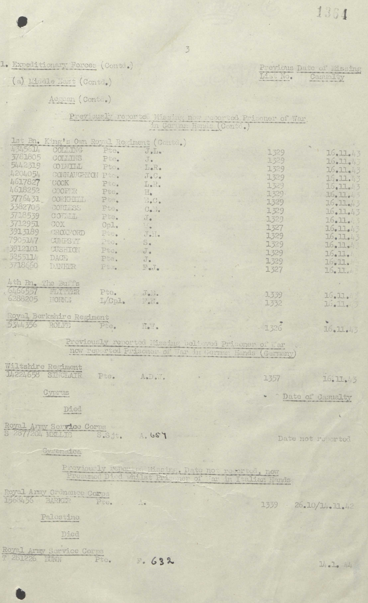
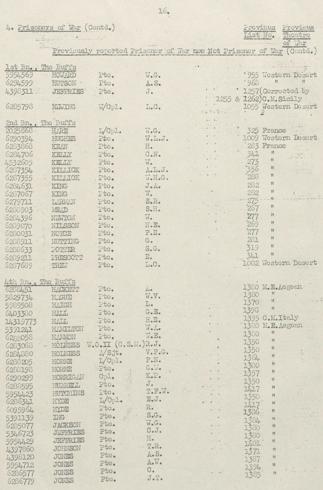

Frederick Norman Horne 1920 - c2006
[ Home ] | [ Calendar ] | [ Surnames Index ] | [ Errors ] | [ Family History ]The 6th of 7 children of Isaac Horne (a hay trusser & thatcher heavy worker market gardener) and May Spratt, Frederick Horne, the uncle of Nigel Horne, was born in Minster, Thanet, Kent, England on 23 Nov 19201,2,3,4. He married Ivy Dixon in Thanet, Kent, England around Aug 19615.
During his life, he was living at Pansy Cottage, Way, Minster in Thanet on 19 Jun 19211; in Oschatz, Saxony, Germany in 19426; and at 69 Augustine Road, Minster in Thanet in 19637. In 1942 he was serving in the military in Camp IV-G, Oschatz, Saxony, Germany (lance Corporal. POW. The Buffs).
He died c. Nov 2006 in Minster2,4 (age: 86).
Parents
- Isaac was born on 10 Apr 1885
- May was born on 1 Jan 1888
Citations
- 1921 Census Of England & Wales - Findmypast (was the son of the head of the household)
- England & Wales deaths 1837-2007 - Findmypast
- England & Wales, Birth Index: 1916-2005 Online publication - Provo, UT, USA: The Generations Network, Inc., 2008.Original data - General Register Office. England and Wales Civil Registration Indexes. London, England: General Register Office. © Crown copyright. Published by permission of the Cont
- England & Wales, Death Index: 1984-2005 Online publication - Provo, UT, USA: The Generations Network, Inc., 2007.Original data - General Register Office. England and Wales Civil Registration Indexes. London, England: General Register Office. © Crown copyright. Published by permission of the Cont
- England & Wales, Marriage Index: 1916-2005 Online publication - Provo, UT, USA: The Generations Network, Inc., 2009.Original data - General Register Office. England and Wales Civil Registration Indexes. London, England: General Register Office. © Crown copyright. Published by permission of the Cont
- UK, British Army Prisoners of War, 1939-1945 Online publication - Provo, UT, USA: Ancestry.com Operations Inc, 2009.Original data - Prisoners of War of British Army, WWII. CD. Unpublished. The Naval and Military Press, Ltd.Original data: Prisoners of War of British Army, WWII. CD. Unpublished. The Na
- 1963 Kelly's Thanet Directory
Media
Mum and Dad Marriage

Frederick Norman Horne
Frederick Horne
Frederick Horne - POW record

POW Papers 2

1963 Kelly's Thanet Directory

England & Wales marriages 1837-2008 Transcription - BMD-M-1961-3-AZ-000794-085
England & Wales births 1837-2006 Transcription - BMD-B-1920-4-AZ-000707-114
England & Wales deaths 1837-2007 Transcription - BMD-D-2006-12-87150679
England & Wales marriages 1837-2008 Transcription - BMD-M-1961-3-AZ-000123-054
British Army Casualty Lists 1939-1945 Transcription - GBM-WO417-0642629
British Army Casualty Lists 1939-1945 Transcription - GBM-WO417-1030609
1921 Census of England & Wales - GBC/1921/RG15/04430/0061/06
Family Tree

Map
Generated by ged2site. Last updated on Jul 3, 2024
Known Issues
Listed in the residence for 1963, but spouse Ivy Dixon is not
1939 UK register information missing